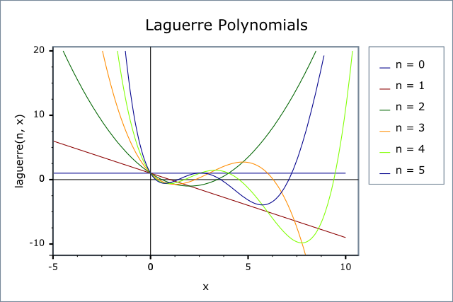

|
Home | Libraries | People | FAQ | More |


#include <boost/math/special_functions/laguerre.hpp>
namespace boost{ namespace math{ template <class T> calculated-result-type laguerre(unsigned n, T x); template <class T, class Policy> calculated-result-type laguerre(unsigned n, T x, const Policy&); template <class T> calculated-result-type laguerre(unsigned n, unsigned m, T x); template <class T, class Policy> calculated-result-type laguerre(unsigned n, unsigned m, T x, const Policy&); template <class T1, class T2, class T3> calculated-result-type laguerre_next(unsigned n, T1 x, T2 Ln, T3 Lnm1); template <class T1, class T2, class T3> calculated-result-type laguerre_next(unsigned n, unsigned m, T1 x, T2 Ln, T3 Lnm1); }} // namespaces
The return type of these functions is computed using the result
type calculation rules: note than when there is a single
template argument the result is the same type as that argument or double if the template argument is an integer
type.
The final Policy argument is optional and can be used to control the behaviour of the function: how it handles errors, what level of precision to use etc. Refer to the policy documentation for more details.
template <class T> calculated-result-type laguerre(unsigned n, T x); template <class T, class Policy> calculated-result-type laguerre(unsigned n, T x, const Policy&);
Returns the value of the Laguerre Polynomial of order n at point x:

The following graph illustrates the behaviour of the first few Laguerre Polynomials:

template <class T> calculated-result-type laguerre(unsigned n, unsigned m, T x); template <class T, class Policy> calculated-result-type laguerre(unsigned n, unsigned m, T x, const Policy&);
Returns the Associated Laguerre polynomial of degree n and order m at point x:

template <class T1, class T2, class T3> calculated-result-type laguerre_next(unsigned n, T1 x, T2 Ln, T3 Lnm1);
Implements the three term recurrence relation for the Laguerre polynomials, this function can be used to create a sequence of values evaluated at the same x, and for rising n.

For example we could produce a vector of the first 10 polynomial values using:
double x = 0.5; // Abscissa value vector<double> v; v.push_back(laguerre(0, x)).push_back(laguerre(1, x)); for(unsigned l = 1; l < 10; ++l) v.push_back(laguerre_next(l, x, v[l], v[l-1]));
Formally the arguments are:
The degree n of the last polynomial calculated.
The abscissa value
The value of the polynomial evaluated at degree n.
The value of the polynomial evaluated at degree n-1.
template <class T1, class T2, class T3> calculated-result-type laguerre_next(unsigned n, unsigned m, T1 x, T2 Ln, T3 Lnm1);
Implements the three term recurrence relation for the Associated Laguerre polynomials, this function can be used to create a sequence of values evaluated at the same x, and for rising degree n.

For example we could produce a vector of the first 10 polynomial values using:
double x = 0.5; // Abscissa value int m = 10; // order vector<double> v; v.push_back(laguerre(0, m, x)).push_back(laguerre(1, m, x)); for(unsigned l = 1; l < 10; ++l) v.push_back(laguerre_next(l, m, x, v[l], v[l-1]));
Formally the arguments are:
The degree of the last polynomial calculated.
The order of the Associated Polynomial.
The abscissa value.
The value of the polynomial evaluated at degree n.
The value of the polynomial evaluated at degree n-1.
The following table shows peak errors (in units of epsilon) for various domains of input arguments. Note that only results for the widest floating point type on the system are given as narrower types have effectively zero error.
Table 32. Peak Errors In the Laguerre Polynomial
|
Significand Size |
Platform and Compiler |
Errors in range 0 < l < 20 |
|---|---|---|
|
53 |
Win32, Visual C++ 8 |
Peak=3000 Mean=185 |
|
64 |
SUSE Linux IA32, g++ 4.1 |
Peak=1x104 Mean=828 |
|
64 |
Red Hat Linux IA64, g++ 3.4.4 |
Peak=1x104 Mean=828 |
|
113 |
HPUX IA64, aCC A.06.06 |
Peak=680 Mean=40 |
Table 33. Peak Errors In the Associated Laguerre Polynomial
|
Significand Size |
Platform and Compiler |
Errors in range 0 < l < 20 |
|---|---|---|
|
53 |
Win32, Visual C++ 8 |
Peak=433 Mean=11 |
|
64 |
SUSE Linux IA32, g++ 4.1 |
Peak=61.4 Mean=19.5 |
|
64 |
Red Hat Linux IA64, g++ 3.4.4 |
Peak=61.4 Mean=19.5 |
|
113 |
HPUX IA64, aCC A.06.06 |
Peak=540 Mean=13.94 |
Note that the worst errors occur when the degree increases, values greater than ~120 are very unlikely to produce sensible results, especially in the associated polynomial case when the order is also large. Further the relative errors are likely to grow arbitrarily large when the function is very close to a root.
A mixture of spot tests of values calculated using functions.wolfram.com, and randomly generated test data are used: the test data was computed using NTL::RR at 1000-bit precision.
These functions are implemented using the stable three term recurrence relations. These relations guarentee low absolute error but cannot guarentee low relative error near one of the roots of the polynomials.